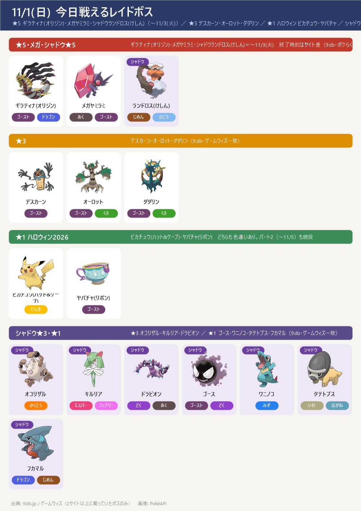
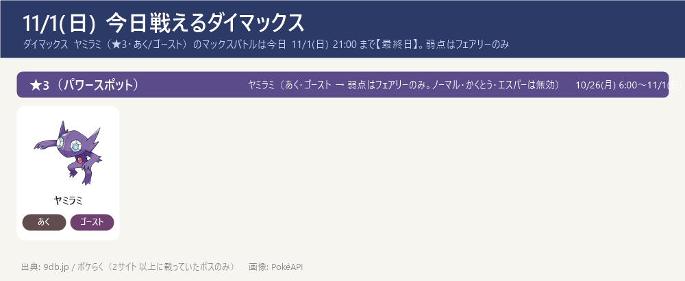
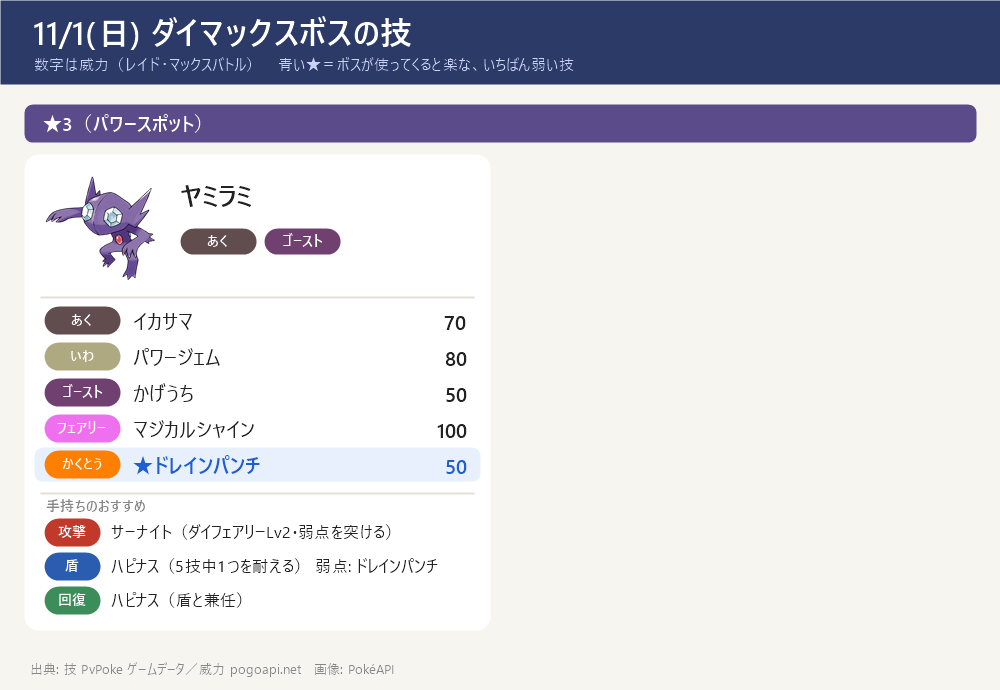

今日のポイント
- 【今日 21:00 まで・最終日】ダイマックス ヤミラミ（★3・あく/ゴースト）のマックスバトル。弱点はフェアリーのみ。攻撃はサーナイト（ダイフェアリーLv2）、盾はハピナス。11/2(月) 6:00 からはワンリキー（マックスマンデー）
- ハロウィン2026 パート1 は今日 11/1(日) 10:00 で終了 → 続けてパート2（11/1 10:00〜11/5(木) 20:00）。色違いボチが初登場（進化でハカドッグ）・メガヤミラミが追加のスペシャルアタックを習得
- ★5 ギラティナ(オリジン)・メガヤミラミ・シャドウランドロス(けしん) は 11/3(火) まで。ギラティナの弱点はこおり・ゴースト・ドラゴン・あく・フェアリー、メガヤミラミはフェアリーのみ（メガヤミラミの終了日はサイト差あり → ゲーム内で確認を）
- 【締切近い】GOパス10月のポイント獲得は 11/3(火) 10:00 まで（報酬の受け取りは 11/5(木) 10:00 まで）。デラックスのキラチャーム使用期限は 11/8(日) 23:59
- リモートレイドの上限20回・グローバルチャレンジ（レイド400万回）は今日 12:00 まで（10/31 9:00〜11/1 12:00）。達成で 11/3〜11/16 にメガシャンデラが強くなる
- 11/14(土) ダイマックス ディアルガに向けて強化を進める：カイリキー（カウンター）・ドリュウズ（マッドショット）・受けのメタグロス。マックス技の強化は 次はドリュウズ（ダイアース Lv1→Lv2）。くわしくはダイマックス育成順ページ
東京の巣：東京の巣 10/22(木)〜11/5(木)（別ページ）
今日戦えるレイドボス
★5 ギラティナ(オリジン)・メガヤミラミ・シャドウランドロス(けしん)（〜11/3(火)）／ ★3 デスカーン・オーロット・ダダリン ／ ★1 ハロウィン ピカチュウ・ヤバチャ ／ シャドウ★3・★1
- ★5 ギラティナ(オリジン)（ゴースト・ドラゴン）は 11/3(火) まで。弱点はこおり・ゴースト・ドラゴン・あく・フェアリー（すべて1.6倍・二重弱点なし）。色違いあり
- メガヤミラミ（あく・ゴースト）→ 弱点はフェアリーのみ。終了日は9db・ゲームウィズ・攻略大百科で 11/3(火) だが、一部サイトは 11/8(日) とする差あり → ゲーム内で確認を（当ノートは複数サイト一致の 11/3 を採用）
- ★1のハロウィン ピカチュウ(ハット&ケープ)・ヤバチャ(リボン)はパート2（〜11/5）の間も続けて出る（ゲームウィズ・9db）。どちらも色違いあり
- レイドの入れ替わりは 11/4(水)：★5 ギラティナ(アナザー) 登場・18:00〜19:00 レイドアワー（ギラティナ アナザー）・シャドウ★5 トルネロス(けしん) 開始

今日戦えるダイマックス
ダイマックス ヤミラミ（★3・あく/ゴースト）のマックスバトルは今日 11/1(日) 21:00 まで【最終日】。弱点はフェアリーのみ
- 【今日 21:00 まで・最終日】ダイマックス ヤミラミ（★3）のマックスバトル（9db・ポケらく一致。開始時刻は 9db 5:00／ポケらく 6:00 と差あり）。参加に400MP。11/2(月) 6:00〜11/8(日) 21:00 はワンリキー（マックスマンデー 11/2 は 6:00〜21:00）
- ヤミラミは あく・ゴースト → 弱点はフェアリーのみ（ノーマル・かくとう・エスパー技は無効）。攻撃はサーナイト（ダイフェアリー Lv2）でフェアリーを突く。盾はハピナス（ノーマルなのでゴースト技が無効・HPで受ける）。※メタグロスはエスパーで あく・ゴースト技が2倍なので受けには使わない
- 今パワースポットに出ている★1〜★3のまとめ：今出ているダイマックスまとめを開く（★1〜★3の一覧・この後の予定）
- ダイマックス ヤミラミのくわしい攻略（受け役カード・パターン別の作戦・ソロ/人数の目安・育成価値）：攻略ページを開く
- 【各ボスのスペシャルアタック候補】（下のカード。数字はレイド・マックスバトルでの威力。★＝ボスが使ってくると楽な、いちばん弱い技（ボスと同じタイプの技は1.2倍で計算。こちらのポケモンとの相性は見ていない）。戦闘中に技名が出たら受け役を合わせる）


ハロウィン2026（パート1は今日10:00まで → パート2へ）
- パート1：〜11/1(日) 10:00（9db・ゲームウィズ一致。攻略大百科は 10/31(土) 20:00 と表記する差あり）
- パート2：11/1(日) 10:00〜11/5(木) 20:00（9db・ゲームウィズ・攻略大百科・ポケらく一致）。色違いボチが初登場（ハカドッグはボチを進化させて入手）・メガヤミラミが追加のスペシャルアタックを習得（スーパーマックスレベルの解放）
- レイド★1：ピカチュウ(ハット&ケープ)・ヤバチャ(リボン)（どちらも色違いあり）はパート2も続投
- ボーナス（GOパス連動）：ランク10到達で捕獲時のアメ2倍（デラックスは3倍）、ランク20到達で捕獲時のほしのすな2倍（デラックスは3倍）
- ※パート2の野生出現や細かいボーナスは1サイトのみの情報が多く、日程・色違いボチ・メガヤミラミの追加技だけを載せています（ゲーム内で確認を）
サカキ対策（シャドウゼクロム）：攻略ページへ（別ページ）
締め切り・やること：まとめページへ（別ページ）
この先の予定（タップで開閉）
- 11/1(日) 12:00 グローバルチャレンジ・リモートレイド上限20回 終了
- 11/1(日) 21:00 ダイマックス ヤミラミ 終了 → 11/2(月) 6:00〜11/8(日) 21:00 ダイマックス ワンリキー（マックスマンデー 11/2 は 6:00〜21:00）
- 11/3(火) 10:00 GOパス10月のポイント獲得終了（報酬の受け取りは 11/5(木) 10:00 まで）／ ★5 ギラティナ(オリジン)・メガヤミラミ・シャドウランドロス(けしん) 終了
- 11/4(水) ★5 ギラティナ(アナザー)・18:00〜19:00 レイドアワー（ギラティナ(アナザー)）・シャドウ★5 トルネロス(けしん) 開始
- 11/5(木) 20:00 ハロウィン2026 パート2 終了
- 11/5(木) 巣の入れ替わり（隔週木曜 9:00）。今の巣は 最新の巣（10/22〜11/5） のページを参照
- 11/5(木) 18:00〜19:00 スポットライトアワー：魔女の帽子をかぶったヒメグマ（進化でXP2倍）
- 11/8(日) 23:59 GOパス10月デラックスのキラチャーム使用期限
- 11/9(月) 10:00〜 ワイルドエリア Into the Wild 開始（〜11/13(金) 20:00）：王の姿のザシアン・ザマゼンタの ★5 レイド。18:00〜19:00 レイドアワーはザシアン
- 11/14(土)・15(日) GOワイルドエリア：グローバル（ダイマックス ディアルガ・パルキア）→ ボス別の攻略ページ・育成順ページ作成済み（GitHub にも公開）
サイトで違っていた点（タップで開閉）
- メガヤミラミの終了日: 9db・ゲームウィズ・攻略大百科は 11/3(火)。一部サイトは 11/8(日) とする差あり → ゲーム内で確認を（当ノートは複数サイト一致の 11/3 を採用）
- ダイマックス ヤミラミの★区分: 9db は ★3、ポケらくは ★4 と表記 → 当ノートは攻略ページに合わせ ★3 とした（ゲーム内で確認を）
- ダイマックスの開始時刻: 9db 5:00／ポケらく 6:00 と差あり（終了 11/1 21:00 は一致）
- ハロウィン パート1の終了: 9db・ゲームウィズ 11/1(日) 10:00／攻略大百科 10/31(土) 20:00 → 当ノートは 11/1 10:00 を採用
- ハロウィン パート2の野生出現・細かいボーナス: 1サイトのみの情報が多い → 日程・色違いボチ・メガヤミラミの追加技のみ採用
- ★5/シャドウ★5 の終了時刻: 9db・ポケらく 21:00／攻略大百科 20:30 と差あり → ゲーム内で確認を
- ダイマックスボスの技候補はゲームデータ(PvPoke)から（おんがえし・やつあたりは除外）、威力は pogoapi.net
出典: 9db.jp/pokemongo（レイド日程 data/2308・開催イベント一覧 data/4351・マックスバトル data/20859・ハロウィン2026 data/26443）／pokemon.gamepedia.jp/go（攻略大百科 今月のイベント archives/77843）／pokemongo.gamewith.jp（レイド show/60906・ハロウィン2026 show/580744）／pokemongo-raku.com（マックスバトル post95707）／pvpoke.com ゲームデータ（技候補）
画像: PokéAPI ／ 2サイト以上で一致した情報だけを載せています